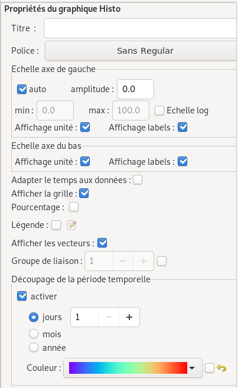

Configurer un graphique Histo

Titre :
Titre qui apparaît en haut du graphique.
Noter la possibilité d'utiliser des macros dans le titre du graphique (voir info-bulle).
Police : Police du titre : une interface permet de configurer la police (fonte, taille).
Echelles :
Adapter le temps aux données : Fixe les limites de l'axe des abscisses aux valeurs min et max du temps des données et non aux valeurs des dates sélectionnées.
Afficher la grille : Affiche la grille des coordonnées pour une meilleure lecture du graphique.
Pourcentage : Bascule l'affichage du nombre de valeurs par classe en pourcentage (axe des ordonnées).
Légende : Controle l'affichage de la légende sur le graphique (taille, position, contenu, cf § Configurer la légende).
Afficher les vecteurs :
Affiche le nom des vecteurs aida visualisés verticalement à droite du graphique.
Affiche également au dessus de l'histogramme le nombre de valeurs de l'échantillon réellement utilisé (sans les valeurs manquantes) ainsi que le pourcentage de valeurs manquantes de l'échantillon.
Groupe de liaison : Permet d'associer le graphique à un groupe de liaison : tous les graphiques appartenant à un même groupe de liaison voient leurs données contraintes les unes par rapport aux autres i.e. une donnée est prise en compte si et seulement si elle existe dans toutes les données de tous les graphiques du groupe.
Découpage de la période temporelle : Permet de ramener les données sur une période temporelle définie. Par exemple, une série temporelle de 7 jours découpée sur une période de 1 jour produira un graphique contenant 7 courbes. La couleur de chaque courbe est issue de la palette de couleurs sélectionnée (1ère couleur = 1ère période, dernière couleur = dernière période)